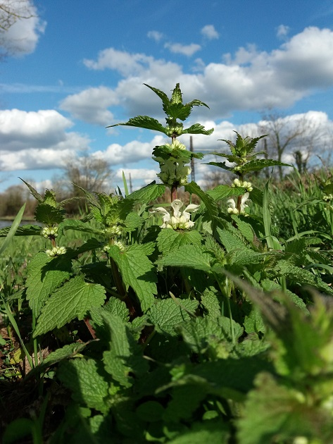
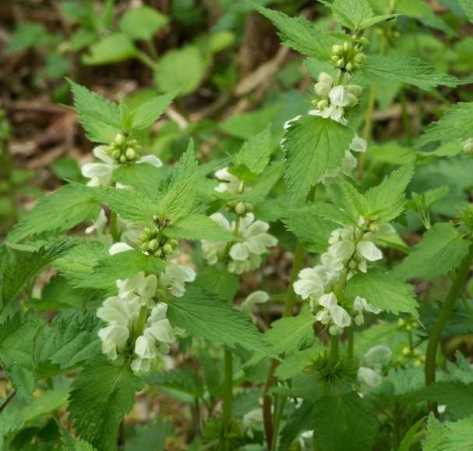
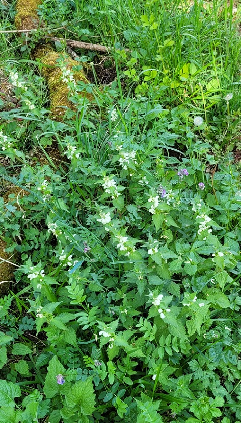
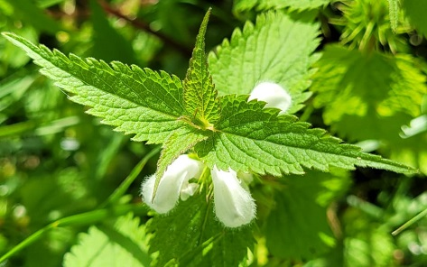
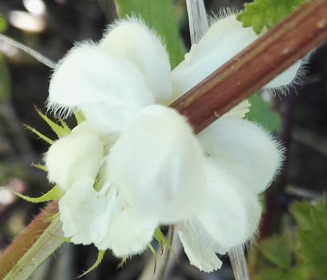
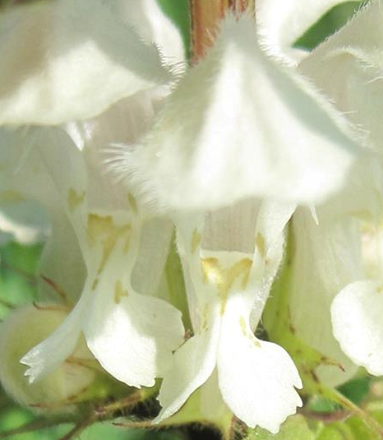
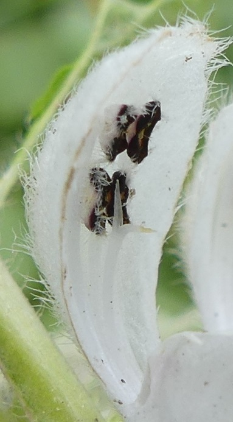
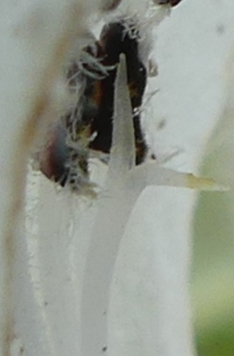

LAMIUM album L.
Lamier blanc, ortie blancheDans l'Yonne
- Très commun.
- Mode de vie : vivace.
- Période de floraison approximative :
Fin Mars-Avril-Mai-Juin-Juillet-Août-Septembre-Octobre-Novembre-Décembre... et même Janvier en 2021

Esnon, 29 mars 2018 - Photo © Daniel Bourget
- Habitat : Haies, clairières, bord des chemins.
- Tailles :
 10 à 30 cm 10 à 30 cm
 tube de sa corolle : ± 2 cm de long. tube de sa corolle : ± 2 cm de long.
Origine supposée des noms
- générique : du grec λαμια (lamia), personnage mythologique ou sorte de vampire dévorant les enfants, devenu lamia en latin classique. La forme de la corolle des fleurs évoque une bouche grande ouverte.
- spécifique : album, blanc en latin.

Grimault, 4 mai 2009
Détails caractéristiques

Givry, avril 2026 © Claire Martin-Lucy
- Son rhizome stolonifère blanchâtre facilite sa propagation en colonies importantes et l'apparition de ses plantules aux cotylédons auriculés suivis de leurs feuilles simples à dents espacées.
- Ses tiges creuses, dressées, sont quadrangulaires.
- Ses feuilles simples, pétiolées, de forme triangulaire, ressemblent à celles des orties mais ne piquent pas malgré leurs poils tecteurs et sécréteurs sur leur face supérieure. Leurs marges sont dentelées.

Givry, avril 2026 © Claire Martin-Lucy
- Étant une Lamiacée, ses fleurs sont souvent groupées à l'aisselle des feuilles. Elles poussent en verticille sur la partie supérieure de ses tiges.

Bessy-sur-Cure, 20 avril 2023
- Ses fleurs, sans pédoncule, ont un calice denté persistant.
Leur nectaire, en forme de disque irrégulier, entoure partiellement la base de l'ovaire.
Elles présentent :- une lèvre supérieure poilue, en casque au bord velu, avec des trichomes glandulaires et des papilles sécrétant des huiles essentielles.
- une lèvre inférieure à trois lobes, avec sur le plus grand un guide à nectar pour les insectes pollinisateurs.

Dans l'Aube, le 18 avril 2019
- Le style de ses fleurs a un stigmate bifide.

Dans l'Aube, le 2 janvier 2021
- Leurs 4 étamines à anthères velues, de deux tailles différentes (androcée didyname), sont soudées à la corolle. Leurs trichomes à tête ronde sont sécréteurs, mais elles ont également des poils non glandulaires jouant un rôle de diffuseur de leurs grains de pollen dont la membrane des apertures est ornementée et qui sont de taille moyenne.

Nombre d'espèces icaunaises dans le genre
|


{kind=link}
{kind=link}
{kind=link}